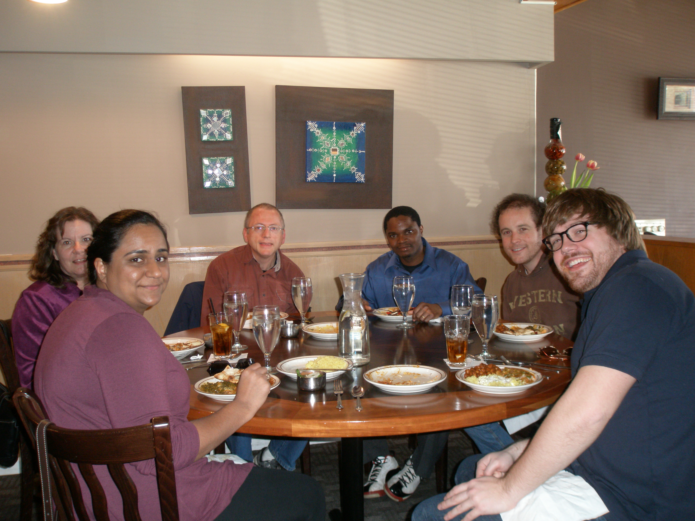

Our research group is pursuing multiple lines of inquiry, including how the history of science can promote the learning of and about science, how history of science and scientific concepts are (and should be) depicted in science textbooks, and the role of feedback on student learning.
Last updated on 27 Apr 2013.